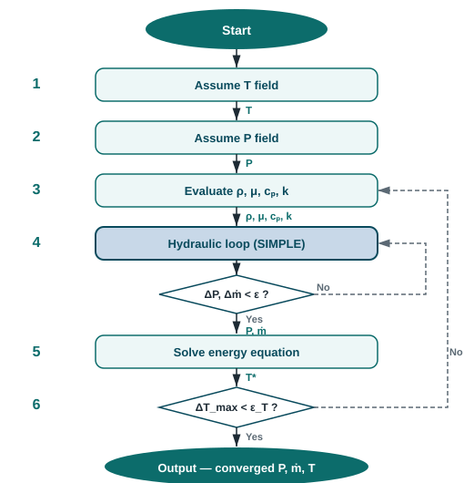

The algorithm
Six steps. Every solver.
The algorithm below is the general form. For an isothermal simulation, steps 1, 5, and 6 are trivial or skipped entirely. For a non-isothermal simulation, all six steps are active. Future solvers — compressible, multiphase — will add physics to the same slots without changing the structure.

Current and planned solvers
The same six steps. Different physics at each one.
Adding a new solver does not mean changing the algorithm — it means providing a new implementation for each slot. The table below shows what each solver does at each step.
| Step | Isothermal | Non-isothermal | Compressible (planned) |
|---|---|---|---|
| 1 — Init T | trivial (uniform T) | from thermal boundary conditions | from thermal boundary conditions |
| 2 — Init P | from hydraulic BCs | from hydraulic BCs | from hydraulic BCs |
| 3 — Properties | ρ, μ constant (user input) | ρ(T), μ(T), cp(T) via correlations | ρ(P, T) via equation of state |
| 4 — Hydraulic loop | SIMPLE → converged ṁ, P | SIMPLE → converged ṁ, P | compressible pressure solver |
| 5 — Energy equation | skipped | NTU + heater sources → T field | full energy equation → T, h field |
| 6 — T converged? | skipped | outer loop until ΔT < ϵT | outer loop until ΔT < ϵT |
Detail pages
Each step documented independently.
Step 4 — Hydraulic loop
Hydraulic Solver
Modified SIMPLE pressure-correction algorithm. Governing equations, element laws (laminar pipes, turbulent pipes, fittings, pumps), pressure-correction derivation, Colebrook-White closure, and fluid property inputs.
Read the hydraulic solver →Steps 5–6 — Thermal loop
Thermal Solver
Steady 1-D energy equation on the converged flow field. NTU analytical solution for pipe heat loss, source term linearisation for inline heaters, and the outer iteration loop that wraps the hydraulic solver.
Read the thermal solver →